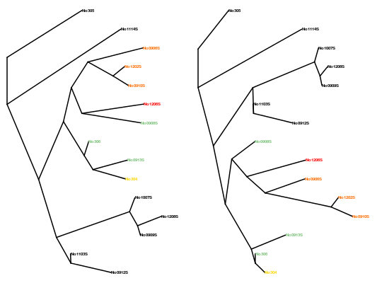

Plot tree differences
Highlight the topologicial differences between two trees, plotted side by side.
This function is useful for comparing representative "median" trees - see medTree.
It relies on the function tipDiff.
plotTreeDiff(tr1, tr2, tipDiff = NULL, vec1 = NULL, vec2 = NULL, baseCol = "grey", col1 = "peachpuff", col2 = "red2", colourMethod = "ramp", palette = lightseasun, ...)
Arguments
- tr1
- an object of the class
phylo: the first tree to plot. - tr2
- an object of the class
phylo: the second tree to plot. - tipDiff
- an optional input, the result of
tipDiff. Supplying this will save time if callingplotTreeDiffrepeatedly, for example with different aesthetics. - vec1
- an optional input, the result of
treeVec(tr1, lambda=0). This argument is ignored iftipDiffis supplied; otherwise supplying this will save time if callingplotTreeDiffrepeatedly, for example with different aesthetics. - vec2
- an optional input, the result of
treeVec(tr2, lambda=0). This argument is ignored iftipDiffis supplied; otherwise supplying this will save time if callingplotTreeDiffrepeatedly, for example with different aesthetics. - baseCol
- the colour used for tips with identical ancestry in the two trees. Defaults to "grey".
- col1
- the first colour used to define the colour spectrum for tips with differences. This colour will be used for tips with minor differences. Defaults to "peachpuff". Ignored if
colourMethod="palette". - col2
- the second colour used to define the colour spectrum for tips with differences. This colour will be used for tips with major differences. Defaults to "red2". Ignored if
colourMethod="palette". - colourMethod
- the method to use for colouring. Default is "ramp", corresponding to the original implementation, where the function
colorRampPaletteis used to create a palette which ranges fromcol1tocol2. For large trees this can be hard to interpret, and methodpalettemay be preferred, which permits the selection of a palette to use inadegenet's functionnum2col. - palette
- the colour palette to be used if
colourMethod="palette". For a list of available palettes see?num2col. - ...
- further arguments passed to
plot.phylo
Value
A plot of the two trees side by side. Tips are coloured in the following way:
- if each ancestor of a tip in tree 1 occurs in tree 2 with the same partition of tip descendants, then the tip is coloured grey (or supplied "baseCol")
- if not, the tip gets coloured pale orange to red on a scale according to how many differences there are amongst its most recent common ancestors with other tips. The colour spectrum can be changed according to preference.
See also
Examples
## simple example on trees with five tips: tr1 <- read.tree(text="((A:1,B:1):1,((C:1,D:1):1,E:1):1):1;") tr2 <- read.tree(text="((A:1,B:1):1,(C:1,(D:1,E:1):1):1):1;") plotTreeDiff(tr1,tr2)## example on larger woodmice trees data(woodmiceTrees) # find the tip differences in advance, to avoid recalculating with each plot wmTipDiff <- tipDiff(woodmiceTrees[[1]],woodmiceTrees[[2]]) plotTreeDiff(woodmiceTrees[[1]],woodmiceTrees[[2]], tipDiff=wmTipDiff)## change aesthetics: plotTreeDiff(woodmiceTrees[[1]],woodmiceTrees[[2]], tipDiff=wmTipDiff, baseCol="grey2", col1="cyan", col2="navy", edge.width=2, type="radial", cex=0.5, font=2)## use colour palette from adegenet: plotTreeDiff(woodmiceTrees[[1]],woodmiceTrees[[2]], tipDiff=wmTipDiff, baseCol="black", colourMethod="palette", edge.width=2, type="cladogram", cex=0.5, font=2)